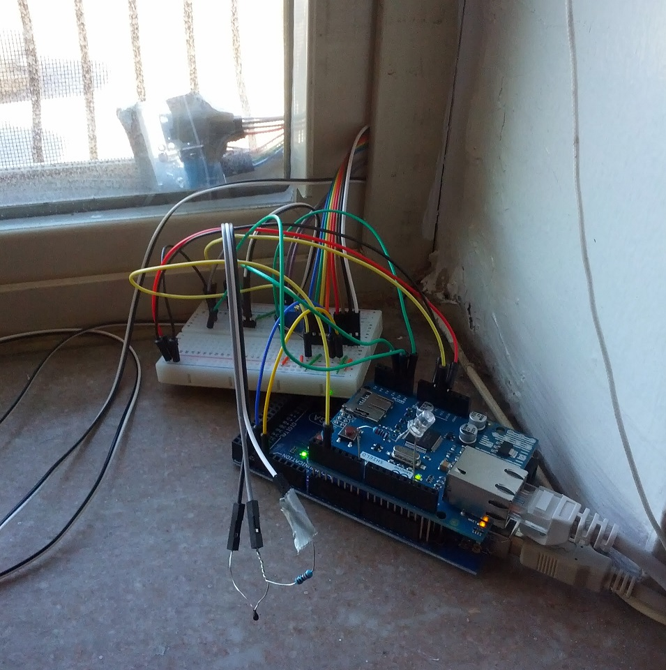

This miniature tank takes advantage of ROS and rosbridge to allow a user to tele-operate it over the internet using either a web GUI, android app, or a google glass app.
Stuff used (top to bottom):
- Raspberry Pi + Camera
- 15000 mAh Anker Battery
- 3D Printed Chassis
- Arduino Uno
- Pololu Zumobot Chassis/Motors + Encoders
- Hot Glue/Zip-ties/Optimism
» Google Glass Pan Tilt Control
I'd been wanting to use Google Glass's sensor data in some interesting robotic fashion.
One idea was to control a camera's pan and tilt, so here's a small prototype I put together that does that!
Stuff used:
- Raspberry Pi + Camera
- ROS rosbridge/rosserial/roslibjs
- Arduino + 2 microservos
- Hot Glue/Duct-Tape/Dreams
» Home - Google Glass Home Monitoring App
Interested in getting useful personal and physical information into Google Glass.
One idea is to track the temperature, pressure, etc. in the apartment and be able to query it through Google Glass from anywhere.
» Wellsense - NYU Abu Dhabi Hackathon
Source CodeSelected to represent CMU at the 2014 Annual NYUAD International Hackathon for Social Good in the Arab world.
Our team Wellsense placed 3rd in this hackathon for building a water well pump monitoring device for less then $30 versus the current $860 and it works without needing to drill holes into the pump's walls.
Our team Resumazing won the $500 Best Visualization Award from Optiver at the Michigan Hacks hackathon.
Resumazing is a web service which determines the skills your ideal employer is looking for, and allows you to leverage that information in the job-hunting process.
By leveraging the AlchemyAPI, Resumazing performs natural language processing and sentiment analysis on two things: your resume, and the description of the job you’re targeting. It then assigns you a rating based on your chances of passing the automated screen with your current resume, and provides you with a series of visualizations which explain the source of that rating.
One visualization shows you the core concepts we’ve extracted from the job posting, and colors them based on how strongly you’ve matched them. Another visualization shows you the core concepts we’ve extracted from your resume, and colors them based on how much we think these concepts will help you in the application process. The information conveyed by these visualizations can provide you with valuable insight that can help you get noticed when you decide to apply for that job.
» Miniature Robotic Tank
Source CodeA miniature robotic tank that can be driven remotely at distances up to 1.5km, take pictures and video using a raspberry pi and camera, run on a 15000mAh battery that lasts for several hours.
This is accomplished using several hobby parts including: Xbee Pro 60mW transcievers, Arduino Uno, Pololu Zumo Robot Parts w/ encoder additions, and a Raspberry Pi + Camera.

A Barnes-Hut Simulation is an N-body simulation of gravitational interactions between point particles using the Barnes-Hut algorithm.
This simulator runs a simulation of the gravitational interactions between an arbitrary amount of bodies/points (tested up to 100k particles).


The system is controlled by 3 PD controllers.
The first controls throttle based on altitude. The second controls TVC angle based on orientation. The third modifies TVC angle based on lateral drift.
The rocket is modelled as a simple 5.5x33m box massing 10 tons, with a maximum thrust of 500 kN. A blue line shows the force in the normal direction. Thrust is shown as a red line, which is in the direction dictated by the TVC controllers.
Basic test of an IMU GY-521 gyroscope/accelerometer sensor sending information to an Arduino Uno an I2C bus. The data is then transmitted to the computer wirelessly using an Xbee Pro. The computer displays a virtual plane facing in the same pose as the IMU. This setup does not yet incorporate re-zeroing using the gravity vector.
This test is part of a battery of prototypes in preparation for building a multi-vehicle collaborative system as part of my Master's project.
Hacking together a cheap ultrasonic scanning rig using hobby parts, to determine how feasible ultrasonic localization will be.
It uses an arduino uno, a servo, and two sainsmart $5 ultrasonic sensors.

Gravity+Collision Simulator using Box2dweb physics engine in HTML5/Javascript

Replaces google search results forwarder links with the original links.

Reduction of O(n^2) 2D collision detection between bouncing balls to O(~density) based on cell size.
» 2D Boids Simulation
Try it out2D Boids simulation with basic obstacle avoidance.